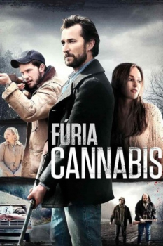

Fúria Cannabis (2015)


For blood. For money. For a way out.

Avaliação (TMDb):


5.8/10 (34 votos)
Avaliação (Usuário):
Outro Título:The World Made Straight
País:United States, 119 minutos
Idiomas falados:Inglês, Português
Gênero(s):Drama
Diretor(s):David Burris
Codec:MPEG-2 (DVD)
Número: 2918
Sinopse:
Década de 70. Em uma comunidade rural dos Alapaches ainda assombrada e dividida pelo legado do massacre da Guerra Civil, um jovem rebelde luta para driblar a violência que tenta prendê-lo a um triste passado e a um presente corrupto.
Elenco:
Haley Joel Osment, Minka Kelly, Noah Wyle, Jeremy Irvine, Adelaide Clemens, Marcus Hester, Sandra Ellis Lafferty, Steve Earle, Stephen Gevedon, Tim Ware
Tipo de mídia: DVD5,
Legendas: Português
Alugado: Não
Tela: 2.35:1